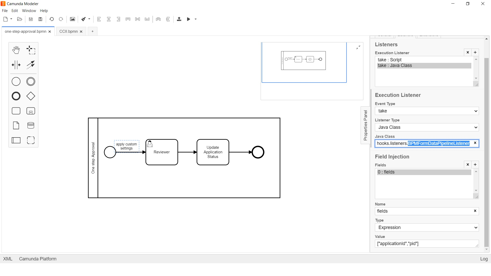

<article class="docs-article">
    <section class="docs-section" id="listeners">
        <div>
            <h2 id="bpm-form-data-pipeline-listener">BPM Form Data Pipeline Listener</h2>
            <p><strong>org.camunda.bpm.extension.hooks.listeners.BPMFormDataPipelineListener</strong>
            </p>
            <p>This component can be used on any event of task/execution listener. Upon
                configuration, it copies
                camunda variables to form (formio) data.</p>
            <h3 id="table-of-content">Table of Content</h3>
            <ul>
                <li><a href="#type">Type</a></li>
                <li><a href="#how-it-works">How it Works</a></li>
                <li><a href="#how-to-use">How to Use</a></li>
            </ul>
            <h4 id="type">Type</h4>
            <p>Task/Execution Listener</p>
            <h4 id="how-it-works">How it Works</h4>
            <p>This component from CAM variables prepares the data for formio submission and,
                invokes the
                <strong>formio Rest based submission endpoint</strong> for updates.
            </p>
            <h4 id="how-to-use">How to Use</h4>
            <p>This component relies on listed parameters.</p>
            <ul>
                <li>fields (Listener field of type expression). Takes in cam variables as array. For
                    example.
                    [&quot;pid&quot;,&quot;applicationId&quot;,&quot;task_id&quot;]. It would
                    populate data from cam
                    variables to form. <code>Mandatory = Yes</code></li>
            </ul>
            <p>Below snapshot shows how to configure the
                <strong>BPMFormDataPipelineListener</strong> to an
                execution.
            </p>
            <p></p>
            <br><br>
            Click here <a href="Email Attributes Listener.html">Email Attributes Listener</a>
        </div>
        </section>
        </article>